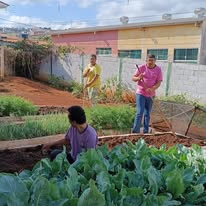
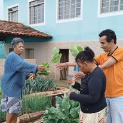
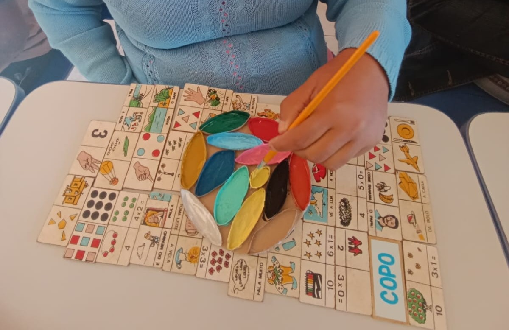

A horta de verduras é mantida pelos usuários do Centro-Dia da APAE, promovendo aprendizado, responsabilidade e contato com a natureza.
Com o auxílio da monitora e do motorista, os participantes realizam a preparação dos canteiros e organizam o espaço para o plantio das mudas.
O cuidado com a horta faz parte da rotina diária, sendo realizadas atividades de irrigação no período da manhã e da tarde por meio de um sistema de rodízio entre os usuários.
Após o período de cultivo, as verduras colhidas são encaminhadas para a cozinha da instituição, onde são utilizadas no preparo das refeições servidas aos usuários do Centro-Dia.
Quando há produção excedente, os alimentos são distribuídos aos participantes para que possam levar verduras frescas e cultivadas por eles mesmos para suas casas.

